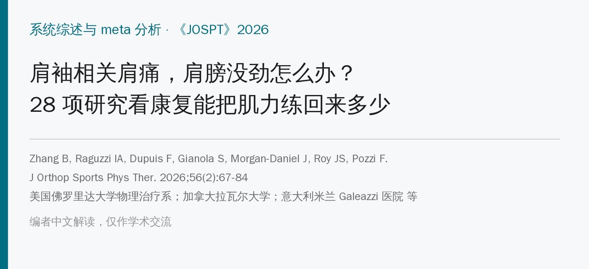
🔖原文信息（编者中文重排）
📚 文献信息
▪ Zhang B, Raguzzi IA, Dupuis F, Gianola S, Morgan-Daniel J, Roy JS, Pozzi F. Addressing Shoulder Weakness in Individuals With Rotator Cuff–Related Shoulder Pain: A Systematic Review With Meta-analysis. J Orthop Sports Phys Ther. 2026;56(2):67-84. doi:10.2519/jospt.2025.13445
▪ 作者单位：美国佛罗里达大学物理治疗系；加拿大拉瓦尔大学、Cirris 研究中心；意大利米兰 Galeazzi 医院 等
▪ 文章类型：系统综述与 meta 分析（33 项研究，28 项纳入合并；PROSPERO 预注册）
• 肩袖相关肩痛（RCRSP）患者做 6～12 周康复后，肩部肌力普遍提高：外旋为中等效应（SMD 0.56），外展、内旋、前屈、肩胛平面上举为小效应
• 提高主要来自有主动运动的干预（力量训练、多模式康复）；单纯宣教、假治疗和自然病程组肌力没有变化
• 离心训练和神经肌肉电刺激的组内提高最大，但数据组数很少、差异很大，作者也提醒谨慎解读
• 疗程 6、8、9、12 周的效果差不多，疗程长短可能不是关键
• 注意：本文比的是各组自己的练前练后，不是和对照组比，不能据此判断哪种练法更好
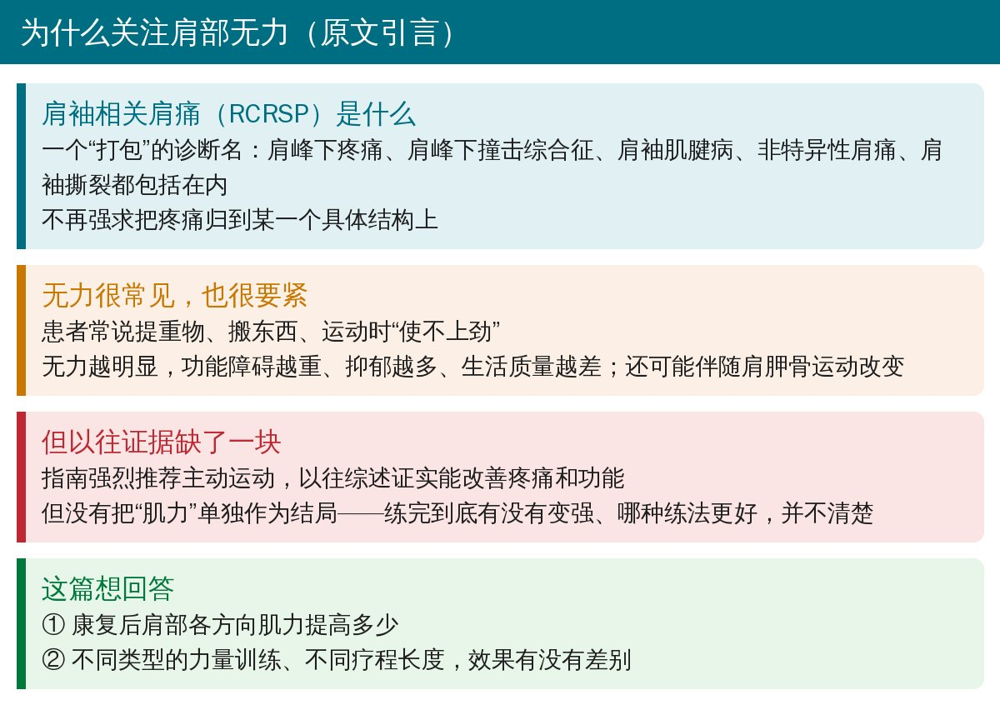
🔖背景（据原文引言整理）
RCRSP 是一个把肩峰下疼痛、撞击综合征、肩袖肌腱病、非特异性肩痛和肩袖撕裂“打包”在一起的诊断名。这类患者常说提东西、搬重物、运动时使不上劲，而且无力越明显，功能障碍越重、抑郁越多、生活质量越差。
指南强烈推荐主动运动，以往综述也证实运动能改善疼痛和功能，但都没把肌力单独拿出来看。练完到底有没有变强？哪种练法、练多久更好？这篇综述想回答这些问题。
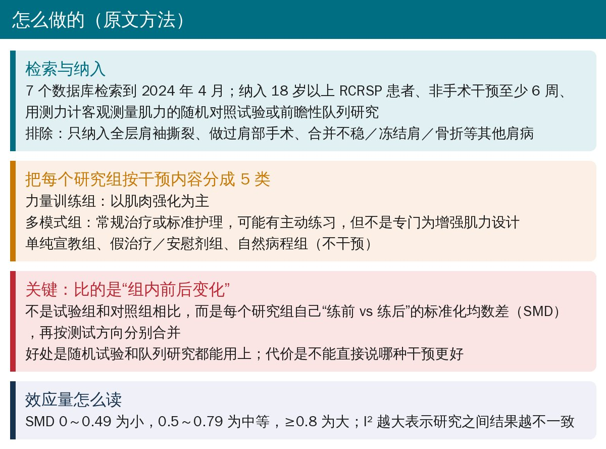
🔖研究方法（据原文整理）
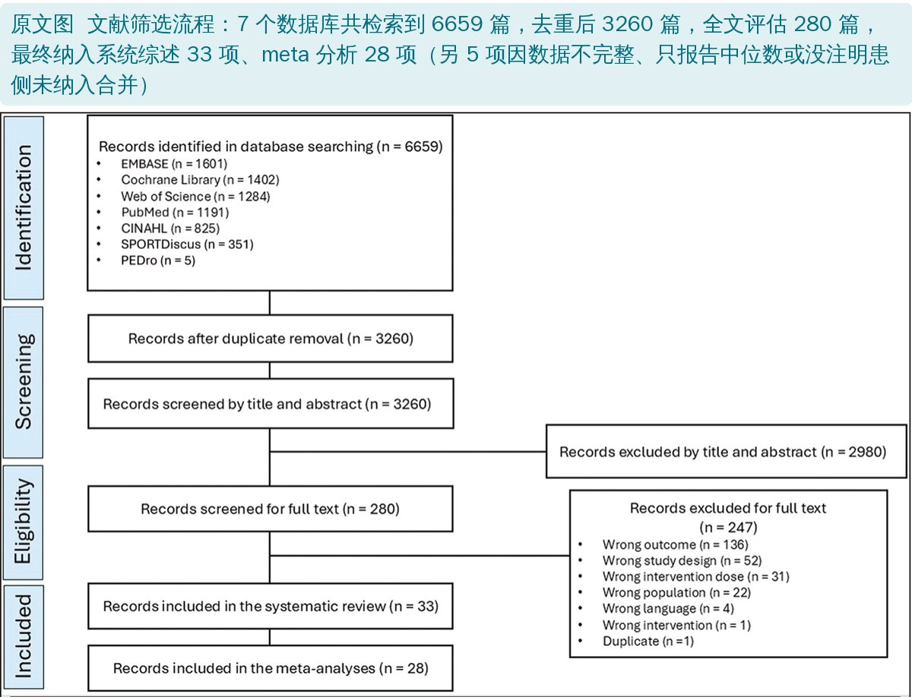
🔖原文图：PRISMA 文献筛选流程（原图未改动）
这篇综述的关键设计是只算“组内前后变化”：每个研究组自己“练前 vs 练后”算一个标准化均数差（SMD），再按测试方向（外旋、内旋、外展等）分别合并。这样随机试验和单组队列都能用上，但代价是不能直接比较哪种干预更好。
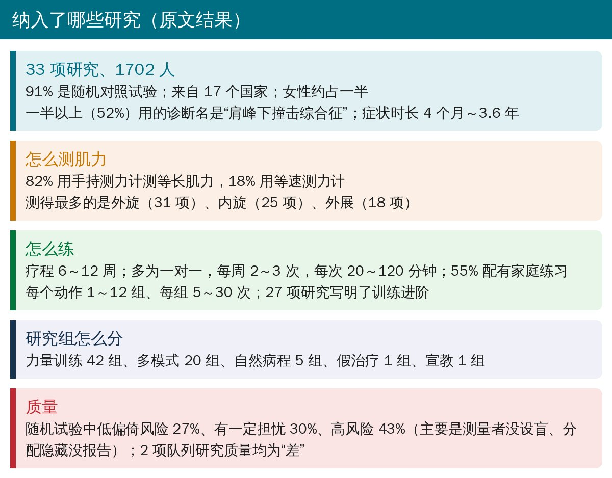
🔖纳入研究概况（据原文结果整理）
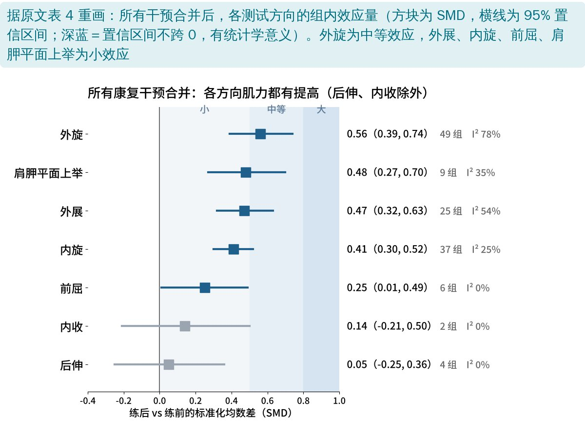
🔖所有干预合并的效应量（据原文表 4 重画）
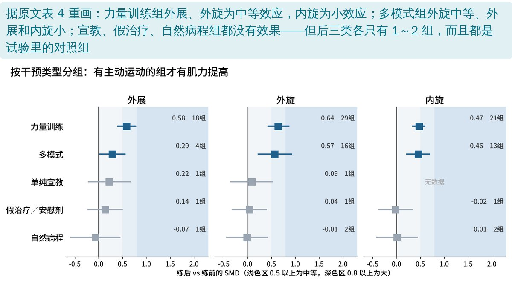
🔖按干预类型分组（据原文表 4 重画）
把所有干预合在一起，外旋、外展、内旋、前屈、肩胛平面上举的肌力都有提高，其中外旋提高最明显；后伸和内收没有变化（数据也很少）。
分组看，力量训练组外展、外旋都达到中等效应，内旋为小效应；多模式组外旋中等，外展、内旋小。宣教、假治疗和自然病程组都没有效果。敏感性分析剔除高偏倚风险研究后，外展、外旋、内旋的结论依然成立，前屈和肩胛平面上举则不太稳定。
换算成千克：练完能多出多少力？（据原文表 7，单位 kg）
| 方向 | 研究数 | 合并标准差 | 力量训练组 | 多模式组 |
|---|---|---|---|---|
| 外展 | 4 | 4.35 | 1.74～3.35 | 0.13～2.39 |
| 外旋 | 8 | 3.24 | 1.39～2.79 | 0.75～2.98 |
| 内旋 | 8 | 3.87 | 1.32～2.29 | 0.85～2.67 |
| 肩胛平面上举 | 3 | 4.93 | 1.28～4.49 | 0.15～2.96 |
| 前屈 | 1 | 2.04 | 0.16～1.37 | 无统计学意义 |
| 后伸 | 1 | 1.34 | 无统计学意义 | 无统计学意义 |
说明：原文用合并效应量 95% 置信区间的上下限乘以合并标准差，换算出平均提高的范围；原文另有按扭矩（N·m）和按体重标化的换算，这里只列千克。
也就是说，力量训练 6～12 周后，外旋大约多出 1.4～2.8 kg，外展大约多出 1.7～3.4 kg。作者认为这可以作为临床上评估肌力恢复的参考。
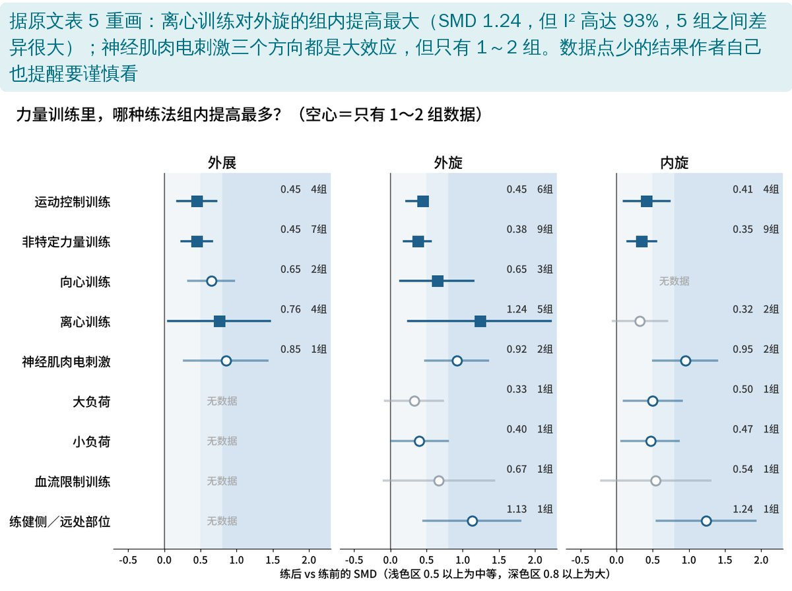
🔖力量训练的类型（据原文表 5 重画）
• 离心训练：外旋提高最大（SMD 1.24），外展为中等；但 5 组之间差异极大（I² 93%），内旋则没有效果
• 神经肌肉电刺激：外展、外旋、内旋都是大效应，但只有 1～2 组数据
• 运动控制训练、非特定力量训练：数据最多（4～9 组），一致性好（I² 0%），效果为小到中等
• 大负荷、小负荷、血流限制训练、练健侧等都只有 1 组，几乎没法下结论
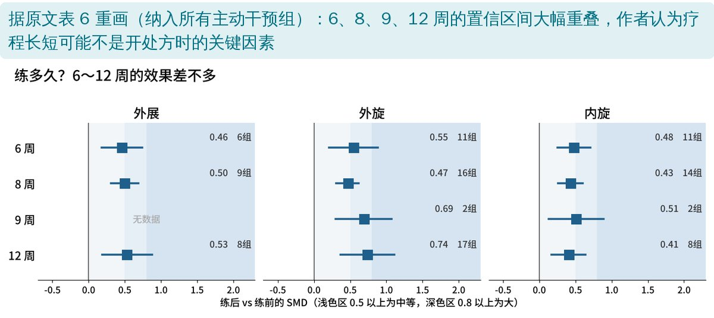
🔖疗程长度（据原文表 6 重画）
6、8、9、12 周的效应量相近，置信区间大幅重叠。作者认为只要练够 6 周以上，疗程长短可能不是开处方时的关键，可以按患者偏好调整内容和时长。
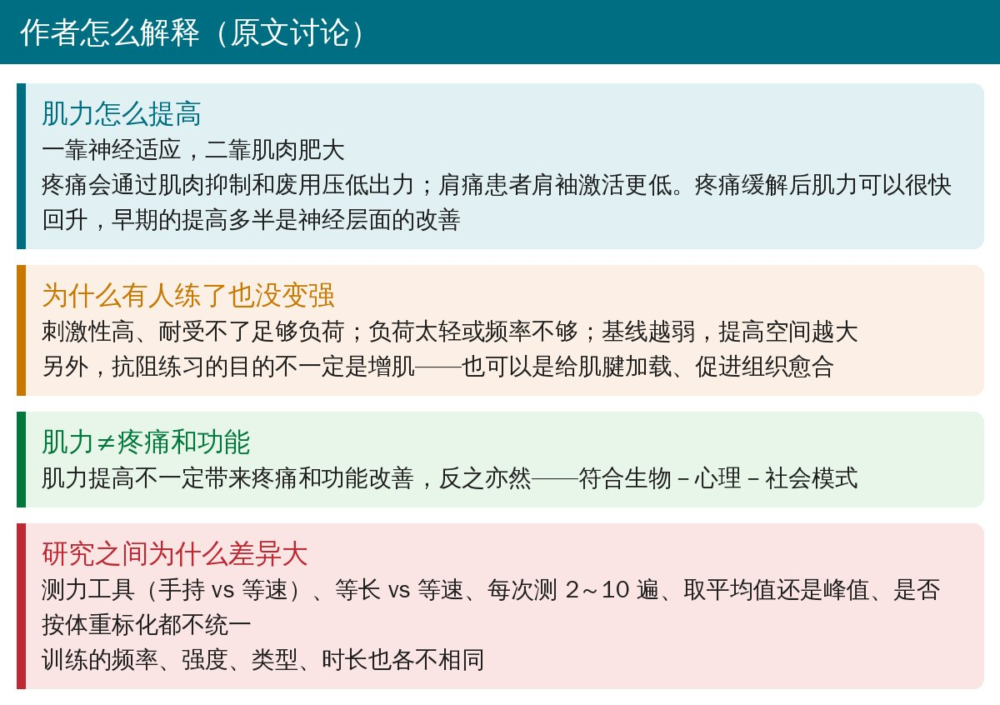
🔖讨论要点（据原文整理）
作者特别提到：肌力提高不一定带来疼痛和功能改善，反过来也一样。早期肌力回升多半是疼痛减轻后神经抑制解除，而不一定是肌肉长大了。
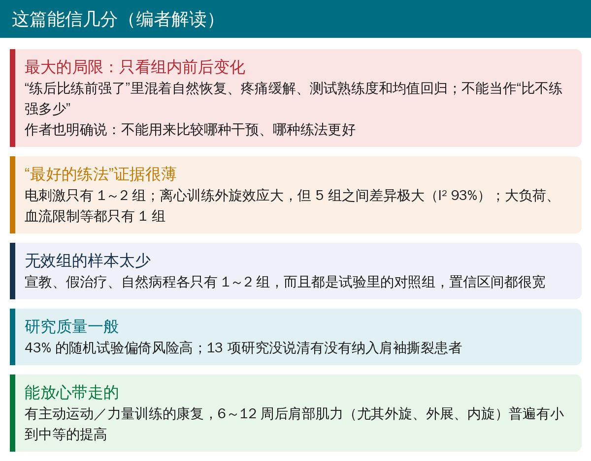
🔖编者解读
• 表 5 中运动控制训练对外旋的 SMD 为 0.45，置信区间却写成 0.22～0.48，点估计不应落在区间之外
• 偏倚风险部分的研究数和后面列的文献编号对不上：“9 项”后列了 10 篇、“13 项”后列了 11 篇，第 9 篇同时出现在两档
• 正文说有 10 周疗程的 2 组，表 6 却没有 10 周这一行
• RCRSP 患者如果有无力，康复里要有主动运动和渐进抗阻，单靠宣教或被动治疗很难把肌力练回来
• 至少练 6 周再评估肌力；外旋通常提高最明显，外展、内旋次之
• 可以用手持测力计定期复测，把“外旋多出 1.4～2.8 kg”当作大致参照；测试方法前后要一致
• 离心训练、电刺激可以作为备选，但证据还很少，不必神化
• 刺激性高、疼痛明显的患者可能耐受不了足够负荷，需要先控制症状、逐步加量
欢迎关注骨科康复小黄公众号，获取更多物理治疗的专业知识！
📄参考文献：
Zhang B, Raguzzi IA, Dupuis F, Gianola S, Morgan-Daniel J, Roy JS, Pozzi F. Addressing Shoulder Weakness in Individuals With Rotator Cuff–Related Shoulder Pain: A Systematic Review With Meta-analysis. J Orthop Sports Phys Ther. 2026;56(2):67-84.
原文版权归 JOSPT, Inc. 所有（All rights reserved），非开放许可。本文为非商业的学术交流中文解读：流程图引自原文，图像未作修改；效应量图由编者根据原文表 4～6 重画，千克换算表据原文表 7 整理，其余整理卡为编者根据原文撰写。仅供学习交流，如有侵权请联系删除。